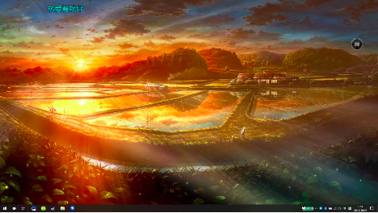

20190505是怎样的一天呢？
失眠到接近三点入睡，早晨六点多就自己醒来，睡不着，就在床上乱想，好的坏的，开心的，伤心的都一股脑地在脑海中游荡，到七点，听着室友闹铃想起，感受到这新的一天的开始，也是我新生活的开始，身体不由得来了力量，穿上衣服，就去跑步了，听着歌曲，心中感受到了过去澎湃在心中的力量，踏着china的鼓点，我跑啊跑，跑啊跑……
中午吃饭，听着旁边的女生对着手机里抱怨，耳机声音放大，但依然烦躁，突然眼圈发热，看看桌上满是蔬菜的午饭，我发起了呆
没缘由的，上着数据结构，听着P、K算法，拓扑排序，就觉得好想她，真的好想她，好想，好想，再也忍不住了，但我又能做什么呢，只能借眼泪来宽慰自己
下午下课后先去实验室敲了一会代码，先国陪我一起吃了晚饭，他也不吃，就坐在那里和我瞎扯，我心里由衷的感动，先国，你真好，我不会秀啥表达，只想说你真好，关心了我的胃病，聊了聊跑步，一起买了一盆小植物回来。
回寝坐了一会儿就去实验室了，这里电脑蓝牙出了一些问题，整了接近一个小时还没解决，BIOS信息找不到，心情烦躁，但敲了一会代码心情就好了…这里看着感觉怪怪的。
晚上意外停电，锁门，和她一同回去，她在前面跑，我在后面跟，可是那条路太短了，我感觉她今晚很开心，我也很开心，离开后，她给我分享了好喜欢你，尽管还是没啥话，但心里暖多了
写了六段，哭了四次，镜子就摆在旁边，我可算见明白了我是啥样子，傻样子。
我意识到爱是会伤人的，尤其是在我不够成熟的时候，为了她，我需要克制的想，克制的爱。
真希望我们俩都能快点好起来，我也会努力不虚度今后的时光。
最后，汪国真的热爱生命，来结束这50分钟的文章。
热爱生命
我不去想，
是否能够成功 ，
既然选择了远方 ，
便只顾风雨兼程。
我不去想，
能否赢得爱情 ，
既然钟情于玫瑰 ，
就勇敢地吐露真诚 。
我不去想，
身后会不会袭来寒风冷雨 ，
既然目标是地平线，
留给世界的只能是背影 。
我不去想，
未来是平坦还是泥泞 ，
只要热爱生命 ，
一切，都在意料之中。

切换站点概览
目录
你已经读了0%